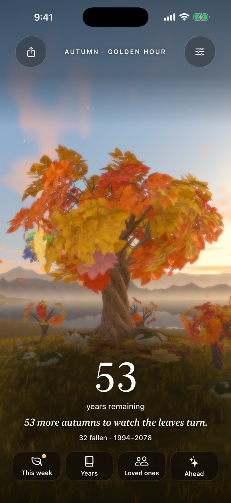
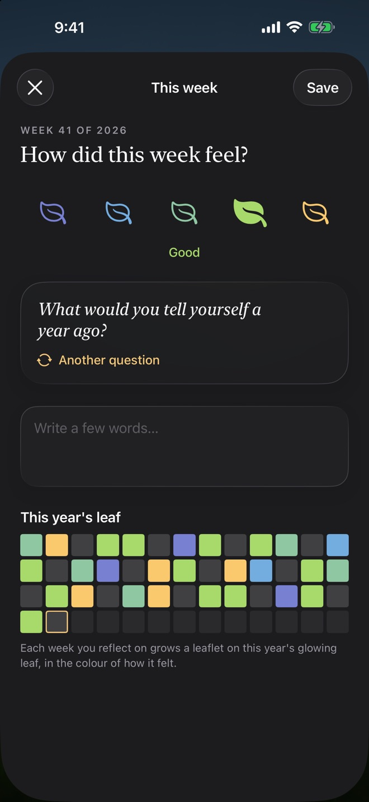
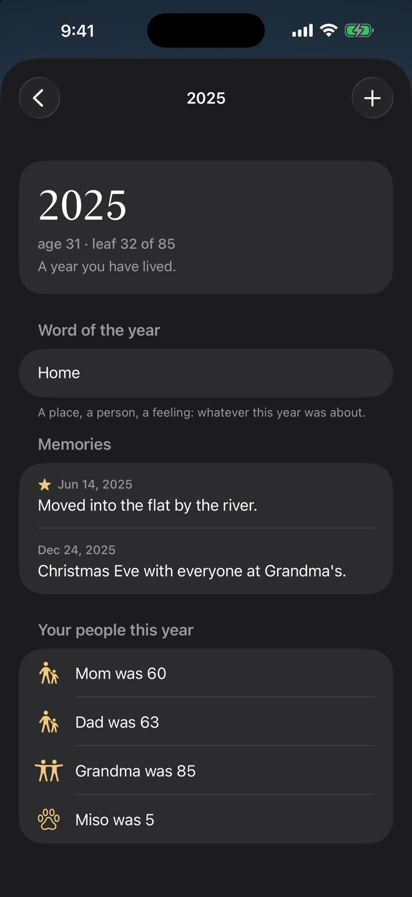
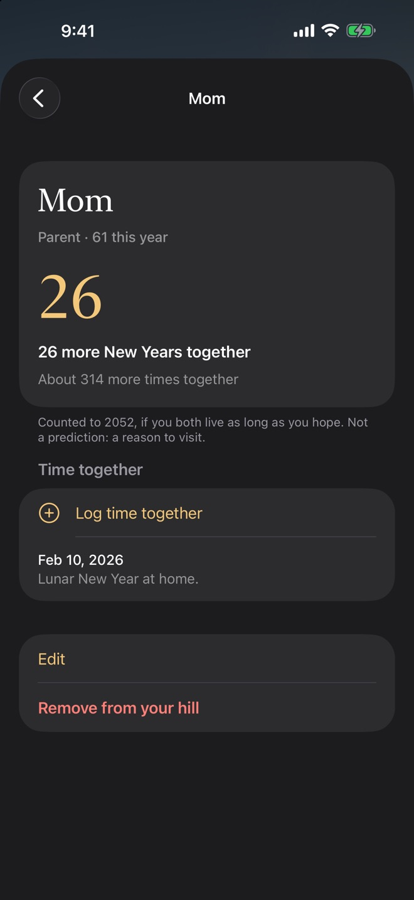

For iPhone and iPad
Every leaf is a year.
Leafyear grows your life as a 3D tree on a quiet hill above a lake, one leaf for every year. Keep what each year held, how each week felt, and the people you spend them with.




A calm place to keep your years
Not a countdown clock: a journal that grows on your tree, week by week and year by year.
This week
Say how the week felt and answer one gentle question. Each week grows a leaflet on this year's leaf. Weekly, never daily, and no streaks.
Your years
Give any year a word, its memories and its photos, and mark the milestones. Remembered leaves glow warm on the ground.
Loved ones
See how many more New Years, or Tết, you may welcome with the people you love, and keep the time you spend together.
Ahead
Hang a dream on the year you hope to live it, or write a letter to your future self, sealed until the day you choose.
Widgets and Siri
Your tree on the Home Screen and Lock Screen, this week's question, a Control Center control, and shortcuts for Siri.
Private by design
No account, no ads, no tracking. Your journal stays on your devices and in your own iCloud, behind Face ID if you like.
Help
The settings button is at the top right of your tree. Everything below starts there, unless it says otherwise.
Your tree
How do I change my birth year or lifespan?
In settings, under Your life, change either one. The tree regrows at once.
Can I see my tree in another season, or at night?
Under Sky, turn off Follow the real sky, then choose a season, a time of day and the weather.
The seasons don't match where I live.
Choose your hemisphere under Sky. Leafyear guesses it from your device's region.
How do I see the weather where I am?
Under Sky, keep Follow the real sky on and turn on Weather where you are. Leafyear asks once for your approximate location and shows the weather from Apple Weather. If location is off for Leafyear, or Apple Weather can't be reached, the sky stays clear.
How do I change the language?
Choose Language in settings. Leafyear speaks English and Vietnamese, and follows your device unless you choose one.
Your journal
Where is my journal?
In the four buttons under your tree: This week, Years, Loved ones and Ahead. You can also tap any leaf to open its year, or a little tree on the hill to open that person.
How do I lock my journal?
Under Journal, turn on Lock journal with Face ID (or Touch ID, or your passcode). Your tree stays open; what you wrote opens only for you. While it's locked, widgets don't show your loved ones or moods.
How do I keep my journal on my other devices?
Sign in to iCloud with the same Apple Account on each device, and make sure iCloud is on for Leafyear (Settings app › your name › iCloud). In Leafyear's settings, Journal › iCloud says On when it syncs. Your birth year, lifespan and settings stay on each device, so enter them once on a new one.
Can I save my moods to Apple Health?
Under Journal, turn on Save moods to Apple Health. Each week's mood is saved to the Health app as a State of Mind. Leafyear never reads anything from Health.
How do I export my journal?
Under Journal, tap Export journal. You get one zip file with your whole journal, as JSON and as Markdown to read, and your photos. Save it to Files or send it wherever you like.
How do I delete my journal, or start again?
Under Journal, Delete journal removes memories, reflections, loved ones, dreams and letters from this device and from your iCloud. Your tree stays. To also remove your birth year and lifespan, tap Start over.
Widgets, Siri and reminders
How do I add a widget?
Touch and hold the Home Screen or Lock Screen, tap Edit, then Add Widget, and choose Leafyear: Your tree, This week's question or Years ahead. A Control Center control opens this week's reflection.
What can I ask Siri?
Try “Add a memory to Leafyear”, “Reflect on my week in Leafyear” or “Show my years ahead in Leafyear”. The same actions are in the Shortcuts app.
How do reminders work?
Under Reminders, turn on a weekly reflection on the day and time you choose, and a note as each season and new year begins. A letter you seal always tells you when it opens. Reminders never show what you wrote.
Still need help?
Write to us with a question, an idea, or something that isn't working. If something went wrong, tell us your device and iOS version.